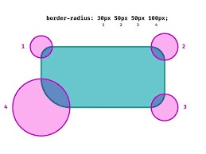

CSS Diseño y Estilos
Hojas de Estilo en Cascada (del inglés Cascading Style Sheets) o CSS es el lenguaje de estilos utilizado para describir la presentación de documentos HTML o XML (incluyendo varios lenguajes basados en XML como SVG, MathML o XHTML).

JavaScript: Interactividad en la Web
JavaScript (JS) es un lenguaje de programación ligero, interpretado, o compilado justo-a-tiempo (just-in-time) con funciones de primera clase.
Atributos de CSS
Los atributos CSS (o propiedades CSS) son características que se aplican a los elementos HTML para definir su apariencia y comportamiento visual en una página web. Estos atributos permiten modificar aspectos como el tamaño del texto, el color de fondo, el espaciado, la visibilidad, las animaciones y muchas otras propiedades de diseño.
| Nombre del Atributo | Descripción | Propiedades | Valores Posibles | Ejemplo de Uso | Imagen Representativa | Fuente |
|---|---|---|---|---|---|---|
| font-size | Define el tamaño de la fuente. | Texto | px, em, rem, % | font-size: 16px; |  |
MDN |
| border-radius | Redondea las esquinas de un elemento. | Borde | px, % | border-radius: 10px; |  | MDN |
| display | Especifica el tipo de caja de un elemento. | Disposición | block, inline, flex, grid | display: flex; |  |
MDN |
| flexbox (display: flex;) | Define un contenedor flexible. | Diseño | flex | display: flex; |  |
MDN |
| position | Determina cómo se posiciona un elemento en la página. | Posicionamiento | static, relative, absolute, fixed | position: absolute; |  |
MDN |
| box-shadow | Agrega sombras a los elementos. | Sombra | offset-x offset-y blur-radius color | box-shadow: 5px 5px 10px gray; |  |
MDN |
| overflow | Controla el contenido desbordante. | Visualización | visible, hidden, scroll, auto | overflow: hidden; |  |
MDN |
| z-index | Define la superposición de elementos. | Capas | Número entero | z-index: 10; |  |
MDN |
| opacity | Ajusta la transparencia del elemento. | Visual | 0 a 1 | opacity: 0.5; |  |
MDN |
| margin | Define los márgenes de un elemento. | Espaciado | px, %, auto | margin: 10px; |

|
MDN |
| visibility | Controla la visibilidad de un elemento. | Visualización | visible, hidden, collapse | visibility: hidden; |  |
MDN |
| cursor | Define el tipo de cursor cuando se pasa sobre un elemento. | Interacción | pointer, default, text, move, etc. | cursor: pointer; |  |
MDN |
| transform | Permite aplicar transformaciones a un elemento. | Transformación | rotate(), scale(), translate(), skew() | transform: rotate(45deg); |  |
MDN |
| transition | Especifica efectos de transición entre estados. | Animación | all, property duration timing-function | transition: all 0.3s ease-in-out; |  |
MDN |